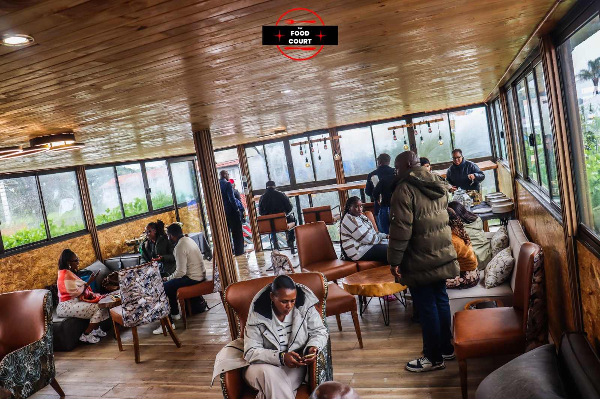
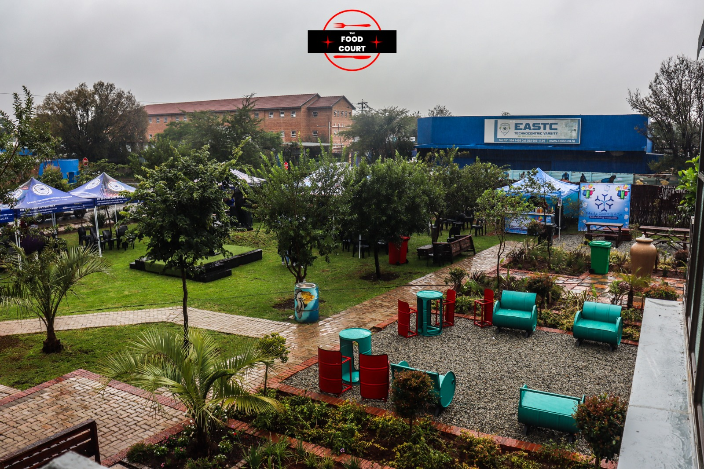
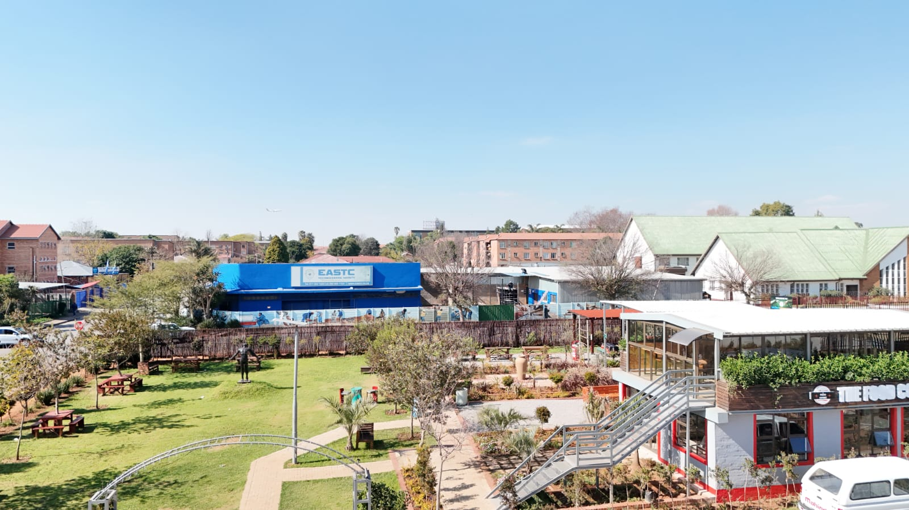
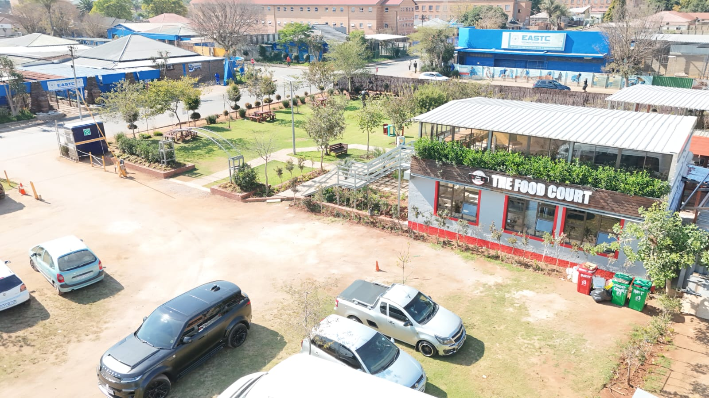

01 · EASTC Foundation NPC
Scholarships, outreach, partnerships, and public-benefit programmes.
Scroll the campus. The Foundation is the public-benefit arm of EASTC — scholarships, programmes, and partners.
Foundation, Institute, and The Food Court share the Maxwell Street grounds.
Scholarships, outreach, partnerships, and public-benefit programmes.
We exist to address unemployment, limited skills access, inequality, and weak workforce readiness among South African and African youth.
Expand access to quality technical education, workforce opportunities, and community development that drive inclusive economic participation.
Strengthen workforce readiness, technical capability, and community resilience through education, practical training, and partnerships.

Bursaries, rural student support, and women in technical fields.
BursariesWomen in TVET
Practical skills, internships, artisan support, and entrepreneurship.
InternshipsArtisan skills
Mobile technical outreach units and community skills workshops.
Mobile unitsRural access
Coding, robotics, AI literacy, STEM, and technology-enabled learning.
AI & codingSTEM
Technical aid, water and sanitation, reconstruction, and empowerment.
WASHCommunityEvery programme is designed for measurable outcomes and shared-cost delivery.
View programmes43 Maxwell Street — the living campus of the EASTC ecosystem, photographed on site.



Donor-ready. Institutionally credible. Accountable by design.